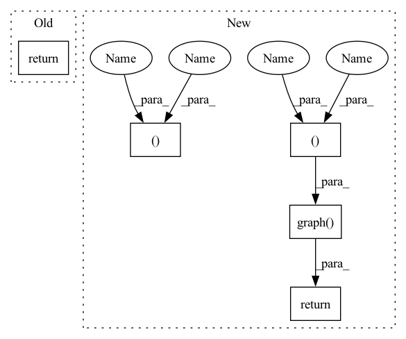

Pattern ID :38026

Before Change
eweight_name = _EDGE_WEIGHT
g = dgl.from_scipy(adj_matrix, eweight_name=eweight_name).to(device)
return g
After Change
threshold=self.threshold,
binarize=self.binarize)
row, col = adj_matrix.nonzero()
defense_g = dgl.graph((row, col), device=device)
defense_g.ndata.update(g.ndata)
defense_g.edata.update(g.edata)
if not self.binarize:
defense_g.edata[_EDGE_WEIGHT] = torch.as_tensor(adj_matrix.data,
device=device, dtype=torch.float32)
return defense_g
In pattern: SUPERPATTERN
Frequency: 3
Non-data size: 5
Instances
Fragment ID: 108872525
Project Name: edisonleeeee/greatx
Commit Name: 00e7690e50bd0611e4f8d3dd2853f8ba2da2714e
Time: 2021-12-07
Author: cnljt@outlook.com
File Name: graphwar/defense/data_level/purification.py
M Class Name: SVDPurification
N Class Name: SVDPurification
M Method Name: forward(2)
N Method Name: forward(2)
M Parent Class: torch.nn.Module
N Parent Class: torch.nn.Module
M File Name: graphwar/defense/data_level/purification.py
N File Name: graphwar/defense/data_level/purification.py
M Start Line: 124
M End Line: 136
N Start Line: 126
N End Line: 140
'>
Before Change
eweight_name = _EDGE_WEIGHT
g = dgl.from_scipy(adj_matrix, eweight_name=eweight_name).to(device)
return g
After Change
threshold=self.threshold,
binarize=self.binarize)
row, col = adj_matrix.nonzero()
defense_g = dgl.graph((row, col), device=device)
defense_g.ndata.update(g.ndata)
defense_g.edata.update(g.edata)
if not self.binarize:
defense_g.edata[_EDGE_WEIGHT] = torch.as_tensor(adj_matrix.data,
device=device, dtype=torch.float32)
return defense_g
'>
Fragment ID: 108872527
Project Name: edisonleeeee/graphwar
Commit Name: 00e7690e50bd0611e4f8d3dd2853f8ba2da2714e
Time: 2021-12-07
Author: cnljt@outlook.com
File Name: graphwar/defense/data_level/purification.py
M Class Name: SVDPurification
N Class Name: SVDPurification
M Method Name: forward(2)
N Method Name: forward(2)
M Parent Class: torch.nn.Module
N Parent Class: torch.nn.Module
M File Name: graphwar/defense/data_level/purification.py
N File Name: graphwar/defense/data_level/purification.py
M Start Line: 124
M End Line: 136
N Start Line: 126
N End Line: 140
'>
Before Change
val_dataloader = NodeDataLoader(graph, val_nid, sampler, batch_size=dataset_cfg["BATCH_SIZE"],
shuffle=True, drop_last=False, num_workers=dataset_cfg["NUM_WORKERS"])
return train_dataloader, val_dataloader, node_feat, labels
def load_subtensor(node_feats, labels, seeds, input_nodes, n_classes, device, mask=False):
After Change
def get_dataloader(dataset_cfg, graph, nid, drop=False):
src, dst = graph.all_edges()
if drop:
mask = th.zeros_like(src).bernoulli_(dataset_cfg["EDGE_DROP"]) == 0
src = src[mask]
dst = dst[mask]
sample_graph = dgl.graph((src, dst), num_nodes=graph.number_of_nodes())
sample_graph = dgl.add_self_loop(sample_graph)
sampler = MultiLayerNeighborSampler(dataset_cfg["FANOUTS"])
dataloader = NodeDataLoader(sample_graph, nid, sampler, batch_size=dataset_cfg["BATCH_SIZE"],
shuffle=True, drop_last=False, num_workers=dataset_cfg["NUM_WORKERS"])
return dataloader
def load_subtensor(dataset_cfg, node_feats, labels, seeds, input_nodes, device, mask=False):
'>
Fragment ID: 108872526
Project Name: langgege-cqu/maxp_dgl
Commit Name: f1f10fccf1844722311242e00bfefcc9f4d1caf6
Time: 2021-11-21
Author: 8747734+bugczw@user.noreply.gitee.com
File Name: maxp_model_czw/train_yaml.py
M Class Name: AnonimousClass
N Class Name: AnonimousClass
M Method Name: get_dataloader(4)
N Method Name: get_dataloader(2)
M Parent Class:
N Parent Class:
M File Name: maxp_model_czw/train_yaml.py
N File Name: maxp_model_czw/train_yaml.py
M Start Line: 107
M End Line: 116
N Start Line: 114
N End Line: 128